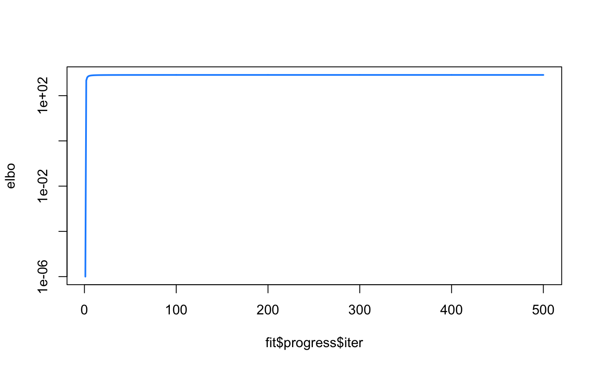
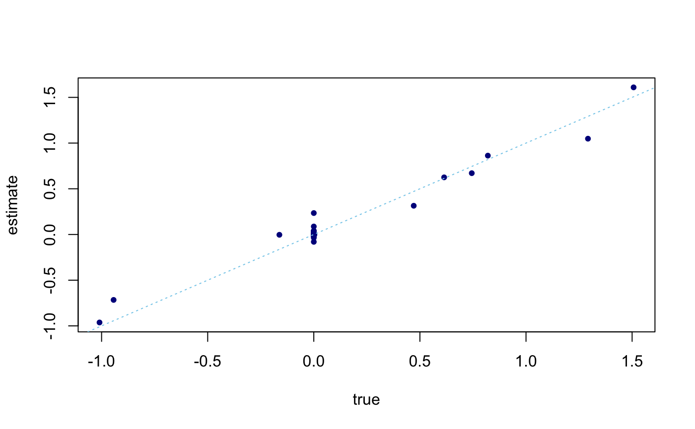

Here we go through a simple example of using Multiple Regression Adaptive Shrinkage, < maybe insert paper link here? >
library(mr.ash)
We simulate a regression data matrix X with n = 400 samples and p = 2000 variables, and a normal response vector y:
set.seed(1) n <- 400 p <- 1000 pve <- 0.5 s <- 10 ## I feel like I shouldn't need to sources these two files, but it keeps saying function ## not found when I knit/build after loading even tho I can use it freely in commandline source("../R/misc2.R") source("../R/datasim.R") sim_data <- simulate_data(n, p, pve, s)
This is the most basic usage, using the default settings:
fit <- mr_ash(sim_data$X,sim_data$y, control = list(max.iter = 500,convtol = 1e-12), verbose = "detailed") # iter elbo ||b-b'|| sigma2 w>0 # 1 +2.405642681821e+03 2.96e+00 7.05e-01 20 # 2 +1.327075779103e+03 3.36e-01 5.71e-01 20 # 3 +9.868513871648e+02 2.00e-01 5.93e-01 20 # 4 +8.541453355042e+02 1.37e-01 6.34e-01 20 # 5 +7.866237345676e+02 1.09e-01 6.73e-01 20 # 6 +7.471872913125e+02 8.65e-02 7.04e-01 17 # 7 +7.228338002780e+02 6.18e-02 7.31e-01 13 # 8 +7.069318149041e+02 4.17e-02 7.53e-01 11 # 9 +6.957980471234e+02 2.99e-02 7.72e-01 10 # 10 +6.876027709319e+02 2.20e-02 7.88e-01 9 # ........ # 490 +6.456370631675e+02 1.15e-07 9.82e-01 3 # 491 +6.456370592689e+02 1.13e-07 9.82e-01 3 # 492 +6.456370554377e+02 1.11e-07 9.82e-01 3 # 493 +6.456370516727e+02 1.09e-07 9.82e-01 3 # 494 +6.456370479728e+02 1.08e-07 9.82e-01 3 # 495 +6.456370443367e+02 1.06e-07 9.82e-01 3 # 496 +6.456370407633e+02 1.04e-07 9.82e-01 3 # 497 +6.456370372514e+02 1.03e-07 9.82e-01 3 # 498 +6.456370338000e+02 1.01e-07 9.82e-01 3 # 499 +6.456370304080e+02 9.95e-08 9.82e-01 3 # 500 +6.456370270742e+02 9.80e-08 9.82e-01 3 # Mr.ASH terminated at iteration 500.
The default model is a mixture with 20 components, with prior mixture component variances in increasing order, starting at zero and ending at roughly 1:
fit$sa2 #> [1] 0.000000000 0.001249739 0.005176797 0.012064587 0.022220082 0.035975617 #> [7] 0.053690831 0.075754746 0.102587999 0.134645248 0.172417743 0.216436097 #> [13] 0.267273249 0.325547659 0.391926725 0.467130460 0.551935431 0.647178991 #> [19] 0.753763822 0.872662805
For each iteration, we calculate the Evidence Lower Bound (ELBO) until the maximum iterations specified is reached (in the case demonstrated here), or when convergence criterion is met. We can observe that the estimated \(\beta\) is a good reflection of the
elbo <- fit$progress$elbo elbo <- elbo - min(elbo) + 1e-6 plot(fit$progress$iter, elbo, type = "l",log = "y",lwd = 2,col = "dodgerblue")

plot(sim_data$beta,coef(fit)[-1],pch = 20,col = "darkblue",xlab = "true",ylab = "estimate") abline(a = 0,b = 1,col = "skyblue",lty = "dotted")

## Another *source* issue source("../R/misc.R") posterior <- get_posterior_summary(fit) str(posterior) #> List of 3 #> $ m : num [1:1000, 1:20] 0 0 0 0 0 0 0 0 0 0 ... #> $ s2 : num [1:1000, 1:20] 0 0 0 0 0 0 0 0 0 0 ... #> $ lfsr: num [1:1000] 0.998 0.978 0.975 0.996 0.668 ... #> - attr(*, "class")= chr [1:2] "posterior" "list" head(posterior$m) #> [,1] [,2] [,3] [,4] [,5] [,6] [,7] #> [1,] 0 -0.04286624 -0.08865649 -0.1100063 -0.1199269 -0.1250494 -0.1279626 #> [2,] 0 -0.26927406 -0.51759868 -0.6217775 -0.6679596 -0.6912821 -0.7043905 #> [3,] 0 -0.27191562 -0.53657684 -0.6518484 -0.7037841 -0.7302112 -0.7451237 #> [4,] 0 0.11912606 0.23789511 0.2905201 0.3144115 0.3266120 0.3335097 #> [5,] 0 0.41102973 0.79260574 0.9534142 1.0248380 1.0609402 1.0812411 #> [6,] 0 0.26637163 0.52740756 0.6416508 0.6932330 0.7195064 0.7343401 #> [,8] [,9] [,10] [,11] [,12] [,13] #> [1,] -0.1297504 -0.1309146 -0.1317089 -0.1322716 -0.1326825 -0.1329903 #> [2,] -0.7123805 -0.7175611 -0.7210859 -0.7235777 -0.7253950 -0.7267549 #> [3,] -0.7542343 -0.7601500 -0.7641788 -0.7670288 -0.7691083 -0.7706649 #> [4,] 0.3377283 0.3404695 0.3423371 0.3436588 0.3446233 0.3453454 #> [5,] 1.0936184 1.1016451 1.1071068 1.1109684 1.1137847 1.1158923 #> [6,] 0.7434052 0.7492926 0.7533025 0.7561395 0.7582096 0.7597593 #> [,14] [,15] [,16] [,17] [,18] [,19] #> [1,] -0.1332259 -0.1334094 -0.1335547 -0.1336713 -0.1337659 -0.1338435 #> [2,] -0.7277947 -0.7286044 -0.7292451 -0.7297589 -0.7301759 -0.7305180 #> [3,] -0.7718555 -0.7727828 -0.7735166 -0.7741052 -0.7745829 -0.7749749 #> [4,] 0.3458978 0.3463281 0.3466686 0.3469418 0.3471635 0.3473454 #> [5,] 1.1175038 1.1187589 1.1197518 1.1205482 1.1211946 1.1217248 #> [6,] 0.7609445 0.7618678 0.7625984 0.7631844 0.7636601 0.7640503 #> [,20] #> [1,] -0.1339078 #> [2,] -0.7308013 #> [3,] -0.7752994 #> [4,] 0.3474960 #> [5,] 1.1221639 #> [6,] 0.7643735 head(posterior$s2) #> [,1] [,2] [,3] [,4] [,5] [,6] [,7] #> [1,] 0 0.006170663 0.01276224 0.01583559 0.01726367 0.01800106 0.01842042 #> [2,] 0 0.005731865 0.01101779 0.01323538 0.01421843 0.01471488 0.01499391 #> [3,] 0 0.005892882 0.01162855 0.01412668 0.01525222 0.01582494 0.01614812 #> [4,] 0 0.005964680 0.01191148 0.01454643 0.01574268 0.01635357 0.01669894 #> [5,] 0 0.005751660 0.01109117 0.01334140 0.01434086 0.01484605 0.01513012 #> [6,] 0 0.005913210 0.01170797 0.01424407 0.01538915 0.01597239 0.01630169 #> [,8] [,9] [,10] [,11] [,12] [,13] #> [1,] 0.01867778 0.01884536 0.01895971 0.01904070 0.01909986 0.01914417 #> [2,] 0.01516399 0.01527427 0.01534929 0.01540234 0.01544102 0.01546997 #> [3,] 0.01634556 0.01647377 0.01656108 0.01662284 0.01666791 0.01670164 #> [4,] 0.01691016 0.01704742 0.01714093 0.01720710 0.01725540 0.01729156 #> [5,] 0.01530332 0.01541564 0.01549207 0.01554611 0.01558552 0.01561501 #> [6,] 0.01650293 0.01663362 0.01672264 0.01678562 0.01683157 0.01686597 #> [,14] [,15] [,16] [,17] [,18] [,19] #> [1,] 0.01917808 0.01920450 0.01922541 0.01924219 0.01925581 0.01926699 #> [2,] 0.01549210 0.01550934 0.01552297 0.01553391 0.01554279 0.01555007 #> [3,] 0.01672744 0.01674754 0.01676344 0.01677620 0.01678655 0.01679505 #> [4,] 0.01731921 0.01734076 0.01735781 0.01737148 0.01738259 0.01739169 #> [5,] 0.01563756 0.01565512 0.01566902 0.01568016 0.01568921 0.01569663 #> [6,] 0.01689228 0.01691278 0.01692900 0.01694200 0.01695256 0.01696123 #> [,20] #> [1,] 0.01927625 #> [2,] 0.01555610 #> [3,] 0.01680208 #> [4,] 0.01739924 #> [5,] 0.01570277 #> [6,] 0.01696840 head(posterior$lfsr) #> [1] 0.9977973 0.9778337 0.9748432 0.9962386 0.6684970 0.9768647
Posterior means and variances are \(p \times K\) matrices, while posterior local false discovery rate (lfsr) is a vector of length \(p\).
print(sessionInfo()) #> R version 3.6.2 (2019-12-12) #> Platform: x86_64-apple-darwin15.6.0 (64-bit) #> Running under: macOS Catalina 10.15.7 #> #> Matrix products: default #> BLAS: /Library/Frameworks/R.framework/Versions/3.6/Resources/lib/libRblas.0.dylib #> LAPACK: /Library/Frameworks/R.framework/Versions/3.6/Resources/lib/libRlapack.dylib #> #> locale: #> [1] en_US.UTF-8/en_US.UTF-8/en_US.UTF-8/C/en_US.UTF-8/en_US.UTF-8 #> #> attached base packages: #> [1] stats graphics grDevices utils datasets methods base #> #> other attached packages: #> [1] mr.ash_0.1-61 #> #> loaded via a namespace (and not attached): #> [1] Rcpp_1.0.7 lattice_0.20-38 rprojroot_1.3-2 crayon_1.3.4 #> [5] digest_0.6.23 assertthat_0.2.1 MASS_7.3-51.4 grid_3.6.2 #> [9] R6_2.4.1 backports_1.1.5 magrittr_1.5 evaluate_0.14 #> [13] stringi_1.4.3 rlang_0.4.11 fs_1.3.1 Matrix_1.2-18 #> [17] rmarkdown_2.3 pkgdown_1.5.1 desc_1.2.0 tools_3.6.2 #> [21] stringr_1.4.0 yaml_2.2.0 xfun_0.11 compiler_3.6.2 #> [25] memoise_1.1.0 htmltools_0.4.0 knitr_1.26